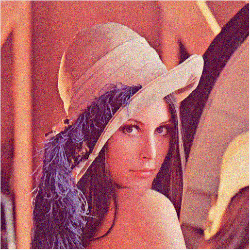
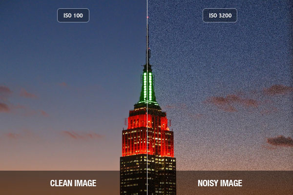
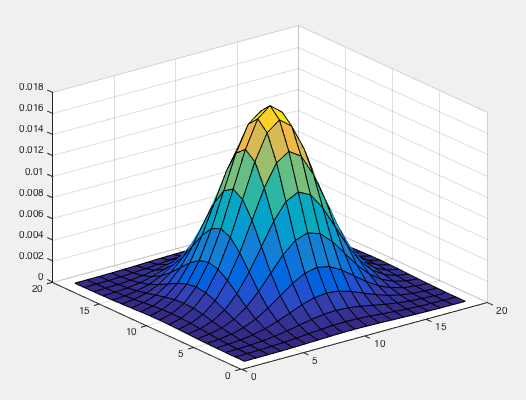
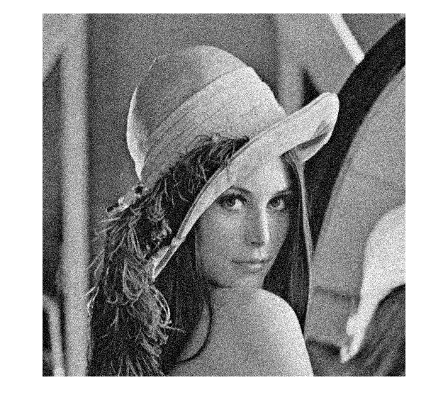
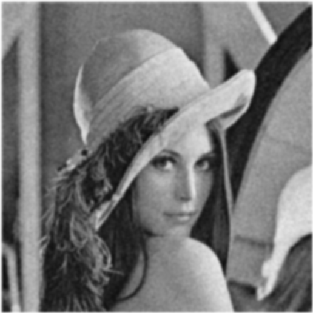
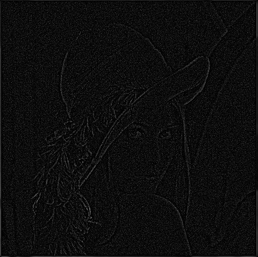
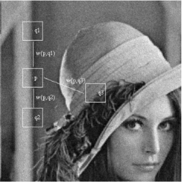
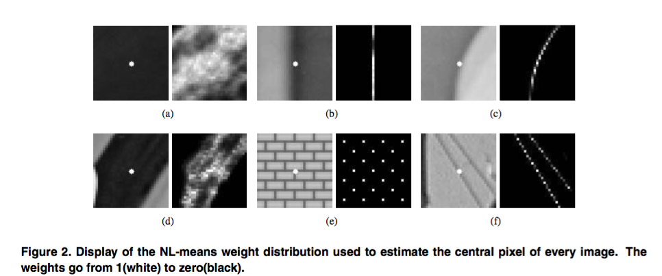
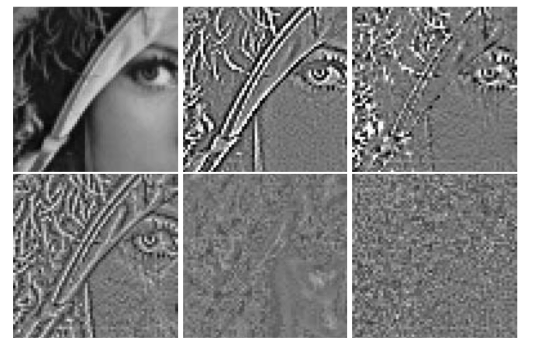
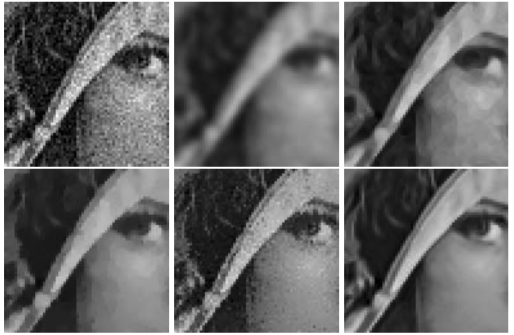

A non-local algorithm for image denoising
CMPT 469 Presentation @Hongyi Zhang
October 15, 2015
Image Noises
Noises could be generated.

imnoise(I, 'gaussian'); % generated by Matlab
It's not uncommon to discover noises in natural images.

|

|
| SFU Diamond Alumni Center | Cute Jellyfish and their Excreta |
Recall Image Formation: images noises and ISO
We have learned in class that higher ISO will result in more noises.
The purpose of this Paper
- Propose a new measurement, Method Noise, to compare different denoising methods
- Propose a new denoising algorithm, Non-Local Mean, based on non-local averaging
Method Noise
Method noise is defined as the image difference. Let u be an image and Dh a denoising operator depending on a filtering parameter h.
Method Noise = u(original image) - Dh*u(processed image)
Visualization of Method Noise
A good denoising method should have method noise containing as little structures as possible.

Classic Local Smoothing Methods
1. Gaussian Filter
Intuition: reduce noise by averaging nearby pixels and weights are decided by distance.
Try Gaussian
Try Gaussian
Method Noise of Gaussian
By design, Gaussian filter is optimal in flat part, but edges are not preserved.
Any better idea to preserve edges?
2. The neighborhood filtering
- Assumption: edges must have different intensities.
- Instead of taking average of all nearby pixels, we only consider nearby pixels with similar greyscale intensities.
- Does this idea sound familiar?...We already learned one of the neighborhood filtering. The Bilateral filter!
Bilateral filter
It can be implemented with two Gaussian kernels
- First Gaussian for weights of distance.
- Second Gaussian for weights of pixel values.
Reference: CMPT 469 course material post processing slides
Image from Bilateral Filtering for Gray and Color Images
Limitations of the neighborhood filtering
So far, neighborhood filter looks like a promising way to solve the problem. However, is it really convincing to only compare grayscale intensities?
Relying on grayscale intensities in not robust if these values are noisy...
3. The anisotropic filtering(AF)
- AF does not perform same filtering in every direction.
- first proposed by Perona and Malik(1990), now widely used to in 3D computer graphics to enhance textures
A simple example of AF
- Edge detection by image gradient: diffuse one pixel only along the direction orthogonal to the direction of its gradient.
- Use 1D Gaussian as kernel
- Also space variant!
We could imagine that the result would be opposite to the isotropic Gaussian filtering. AF performs well on edges, while causing troubles to flat areas.
4. The Total Variation minimization(TV)
- Introduced by Rudin, Osher and Fatemi.
- Variance: the difference of values between adjacent pixels
- Assumption: original image should be smooth, thus the total variance should be minimized.
u: result image
v: noisy image
lambda: scalar, adjusting the degree of smoothness
Recall seamless cloning. They are both minimization problems and the process of calculation is similar.
Result of TV
Edges are maintained, but adjusting lambda could be a problem. If lambda is too small here, flat areas could over-smoothed.

Are classic methods good enough?
- Probably no...
- They are more or less smoothing methods, trying to separate the noises rather than correct them.
- Only neighbors are considered.
New Method: Non-Local means method
- Basic idea: for one single pixel i, the new estimated value is a weighted average of all pixels in the image.
- If the pixel is more similar to pixel i, it has a higher weight. The total weight is 1.
- Q: How do we define similarities?
Similarity
The answer is the neighbors!
For two neighbors, the similarity between them is defined as the Euclidean distance convoled with a Gaussian kernel. The final weights need to be normalized.
Similarity
Those pixels has entirely different neighbor structures tend to have zero weight.
Does this method sound familar?
Almost the same as texture synthesis! They share the same way to pick candidate pixels(calculate neighbor distances).
- Some minor differences
- Texture synthesis wants to generate a new image, while the goal of NL-mean denoising is to correct itself.
- Texture synthesis is in favor of randomness so it picks a random cadidate. NL-mean acts the opposite. It takes the average to eliminrate randomness.
But again, the idea behind them is exactly the same.
Result Comparison
Method Noise
1. Original image 2. Gaussian Filtering 3. Anisotropic filtering
4. Total variation minimization 5. Neighborhood filtering 6. NL-means algorithm
Denoised Images
1. Original image 2. Gaussian Filtering 3. Anisotropic filtering
4. Total variation minimization 5. Neighborhood filtering 6. NL-means algorithm
Analysis
By nature, NL-mean method serves better on texture-like images. But we can see that it still generates satisfying results of natural images due to natural redundancies.
Analysis
The disadvantage of this method is its high computational complexity. In practice, the search of similar pixels is restricted to a relatively large window size. 21*21 window size is applied in the above examples.
The end
Thank you!
- Reference: A non-local algorithm for image denoising
- Slides built by Reveal.js